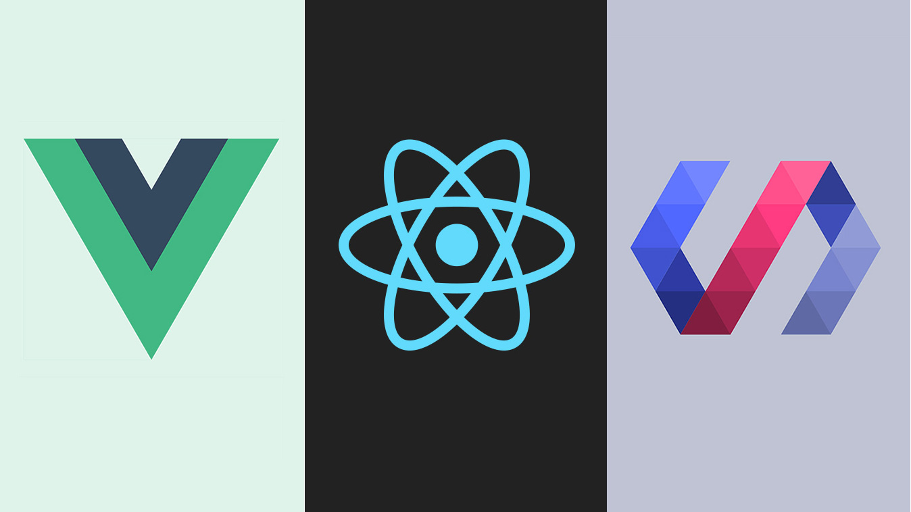

Habilidades

Lenguajes de Programación
- JavaScript
- Python
- PHP

Frameworks
- React
- Angular
- Laravel

Bases de Datos
- MySQL
- MongoDB
- PostgreSQL
Soy un desarrollador con experiencia en lenguajes como JavaScript, C#, Python y PHP, apasionado por diseñar y construir soluciones innovadoras que combinan tecnología y creatividad. .
Saber másSoy un desarrollador con experiencia en múltiples lenguajes de programación, entre los que destacan JavaScript, C#, C++, Python y PHP. Me siento especialmente cómodo trabajando con JavaScript y C#, lo que me ha permitido desarrollar aplicaciones robustas y dinámicas. He trabajado con frameworks como React y Angular para crear interfaces de usuario intuitivas y escalables, y tengo experiencia en la gestión de bases de datos SQL, optimizando el almacenamiento y consulta de datos en proyectos complejos. Mi enfoque se centra en la resolución de problemas, el aprendizaje continuo y la creación de soluciones que impacten positivamente a los usuarios. Me motiva colaborar en proyectos innovadores que combinen tecnología y creatividad.
ShopEasy es una aplicación móvil desarrollada con .NET MAUI que permite a los usuarios gestionar fácilmente sus listas de compras. Ofrece funcionalidades como agregar productos con detalles de cantidad y categoría, editar y eliminar productos para mantener la lista actualizada, agrupar elementos por categorías para facilitar la navegación y una interfaz personalizable con modo oscuro. La aplicación está diseñada para ser multiplataforma, funcionando tanto en dispositivos Android como iOS, utilizando SQLite para el almacenamiento local y el patrón de diseño MVVM para una arquitectura eficiente y escalable.
"SurvivalLife" es un videojuego de supervivencia creado en Unity en el que los jugadores deben enfrentar desafíos y tomar decisiones estratégicas para sobrevivir en un entorno hostil. En este juego, el jugador asume el rol de un personaje que se encuentra atrapado en una isla desierta después de un accidente, sin recursos ni herramientas a su disposición. El objetivo principal del juego es sobrevivir el mayor tiempo posible, gestionando recursos, creando herramientas y construyendo refugios. Para lograrlo, el jugador debe explorar la isla, recolectar materiales como madera, piedras, y plantas, y usarlos para crear objetos que lo ayuden a sobrevivir, como hachas, antorchas y trampas. El entorno en el juego es dinámico, con cambios en la hora del día y el clima.
El sistema de inventario para una tienda de abarrotes se centra en la gestión eficiente de productos que permiten controlar las existencias, realizar pedidos de reposición y llevar un seguimiento de las ventas. En este sistema, cada producto tiene un código único, que facilita su identificación y registro. A medida que los productos son recibidos en la tienda, se ingresan en el sistema con información como nombre, descripción, cantidad disponible, precio de venta y proveedor. El sistema también puede registrar el costo de adquisición, lo que ayuda a calcular las ganancias al momento de realizar la venta. Cuando un cliente compra un producto, la cantidad disponible se actualiza automáticamente, y el sistema genera una alerta cuando el inventario de un artículo está por debajo de un umbral predefinido, lo que facilita la reposición de existencias.
Aunque soy eficiente en la mayoría de los casos, en proyectos muy grandes puedo tardar en establecer prioridades correctamente. Estoy trabajando en mejorar mi planificación y uso de herramientas de gestión de tiempo.
A veces me enfoco demasiado en los detalles, lo que puede retrasar la finalización de tareas. Sin embargo, estoy aprendiendo a encontrar un equilibrio para avanzar más rápido sin perder calidad.